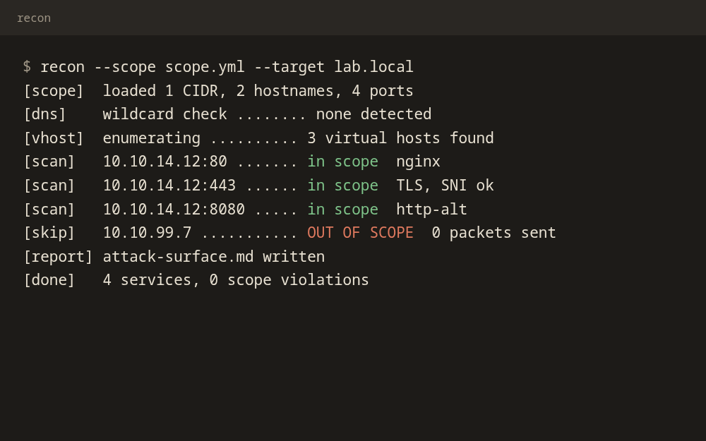
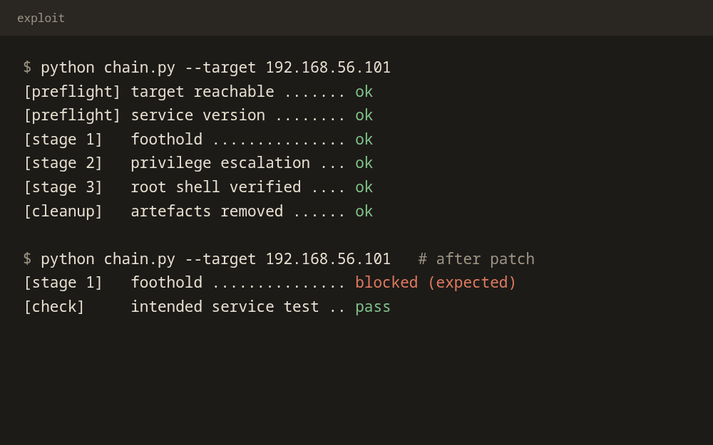

Projects · Selected Work · WAT
Things I've built
Phishing defence platforms, defensive recon tools, and responsive web applications. Click any terminal screenshot to expand.
Phishing defence · NLP · Stateful microservices
Griffin-SOC
One of my most prized projects: an event-driven, AI-automated phishing email gateway. I architected it to actively monitor inboxes, defang malicious indicators of compromise (IOCs) and triage threats using Natural Language Processing (NLP).
Localized, stateful microservices remove external webhook notification dependencies, keeping protection local and latency low. Its React frontend, Griffin-Shield, brings real-time monitoring and forensic triage into one view.

Click to enlarge
Python · Network recon · Scope enforcement
Scope-Safe Recon Engine
A reusable recon platform that handles DNS and wildcards, TLS/SNI, virtual-host enumeration, service scanning and fingerprinting. It checks every target against the allowed CIDR, hostname and port scope before any network call, so out-of-scope decoys receive zero packets.
I used its output to capture the private user.txt flag in an assessment environment and generate a clean attack-surface inventory.

Click to enlarge
Python · Exploit development · Patch verification
Automated Exploit Chain
A foothold-to-root exploit chain for an offline VM, written in Python without Metasploit. It runs preflight checks, uses strict timeouts, fails safely and cleans up after itself.
I ran it repeatedly from a clean snapshot, then applied minimal root-cause patches, re-ran the exploit as a negative test and confirmed the intended service still functioned properly.